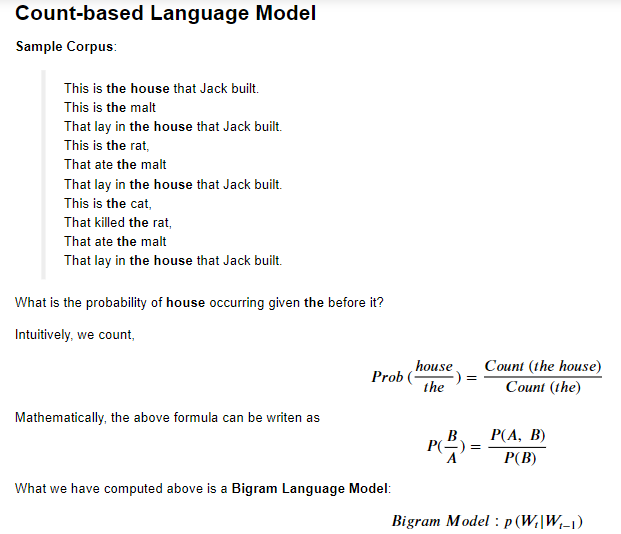
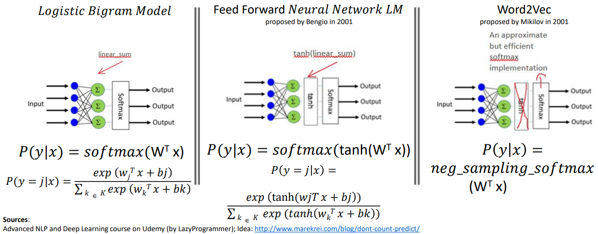
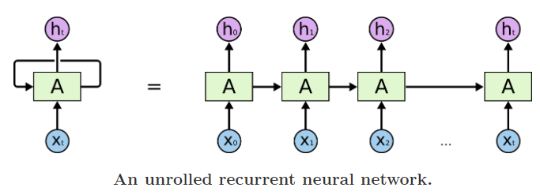
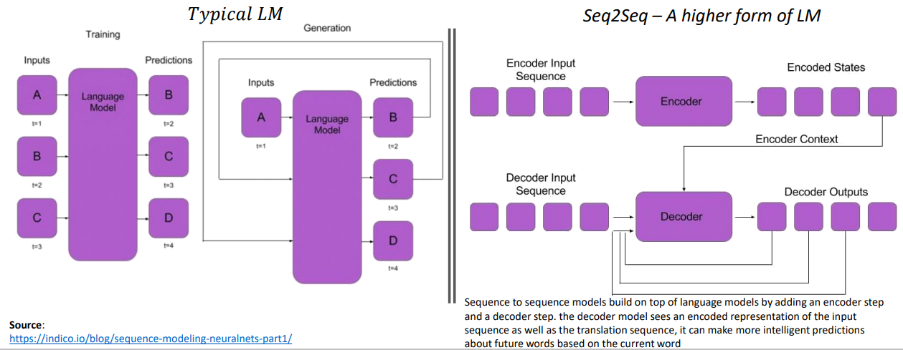
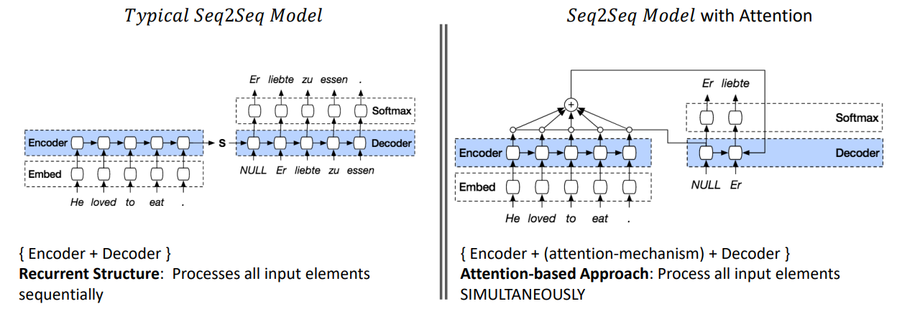
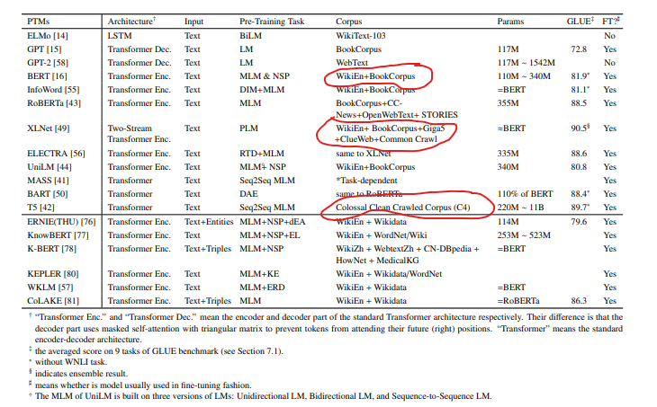

Want to read this blog in a easier to digest slides format? Refer Link
1. Quick Introduction
What is powering the emergence of better models in NLP?
- Better representation of the text data (with no supervision) by grasping the
contextbetter- From
Word2VectoBERTand beyond, this is the underlying logic!
- From
How are better text representations produced?
- Better contextual representation of words using Transfer Learning
What is Transfer Learning?
 Source: ULMFiT Paper | link
Source: ULMFiT Paper | link
What forms the crux of Transfer Learning models in NLP?
- Language Models!
- Build a Language Model that understands the underlying features of the text
- Fine-tune the Language Model with additional layers for downstream tasks
Why Language Model?
Language modeling can be seen as the ideal source task as it captures many facets of language relevant for downstream tasks, such as long-term dependencies, hierarchical relations and sentiment
Ruder et al in the ULMFiT paper
Ok, What is a Language Model?
- A language model (LM) is a model that generates a probability distribution over sequences of words
- In simpler words, LM is a model to predict the next word in a sequence of words
- It is
unsupervisedorself-supervised(since we already know what is the next word in the corpus)
What are those Language Models?
- Examples of Language Models: Word2Vec, Glove, ELMo, ULMFiT, BERT, and many more
 Source: A article by Sebastian Ruder:
Source: A article by Sebastian Ruder: State of Transfer Learning in NLP | Link
What are the two types of Transfer Learning built using the LMs?
- Type 1:
Feature Extraction- Example:
Universal Sentence Encoderproduces just an embedding/numerical representation and that gets used by a downstream application
- Example:
Source of image: TF Hub Article on Universal Sentence Encoder | Link
- Type 2:
Fine Tuning- E.g.:
BERTFine-tuned for Text Classification
- E.g.:
Source of image: An article in Research Gate | Link
2. Types of Language Models
2A. Count-based Language Models

2B. Context-prediction based Pre-trained Language Models

Sources:
- Advanced NLP and Deep Learning course on Udemy (by LazyProgrammer) - Idea: http://www.marekrei.com/blog/dont-count-predict/
2C. LSTM-based Pre-trained Language Models
Evolution of RNN Architecture till LSTM
Why RNNs came into existence?
- Models such as the Multi-layer Perceptron Network, vector machines and logistic regression did not perform well on sequence modelling tasks (e.g.: text_sequence2sentiment_classification) - Why? Lack of memory element ; No information retention - RNNs attempted to redress this shortcoming by introducing loops within the network, thus allowing the retention of information.

Advantage of a vanilla RNN:
- Better than traditional ML algos in retaining information
Limitations of a vanilla RNN:
- RNNs fail to model long term dependencies. - the information was often “forgotten” after the unit activations were multiplied several times by small numbers - Vanishing gradient and exploding gradient problems
Long Short Term Memory (LSTM):
- A special type of RNN architecture - Designed to keep information retained for extended number of timesteps
Advantage of a LSTM:
- Better equipped for long range dependencies - Resists better than RNNs for vanishing gradient problem
Limitations of LSTM:
- Added gates lead to more computation requirement and LSTMs tend to be slower - Difficult to train - Transfer Learning never really worked - Very long gradient paths. LSTM on 100-word doc has gradients 100-layer network
Seq2Seq Models - A higher form of LMs

The ImageNet moment in NLP; advent of LSTM models ULMFiT and ELMo
- ELMo comes up with better
word representations/embeddingsusing Language Models that learn thecontextof the word in focus
2D. Transformer-based Pre-trained Language Models
LSTM Seq2Seq Model with Attention

Transformer - A Seq2Seq Model with Attention
Transformer: - It is a sequence model forgoes the recurrent structure of RNN to adopt attention-based approach - In other words, Transformer is an attention Model without Recurrent LSTMs
Transformer vs LSTM - Recurrent Structure: Processes all input elements SEQUENTIALLY - Attention-based Approach: Process all input elements SIMULTANEOUSLY
The BERT Mountain by Chris McCormick:

Transformer for a Seq2Seq Task like Machine Translation:

The Advent of BERT and similar Transformers
What has been the trend of recent Pre-trained Tranformer-based LMs?
- Exponentially increasing model complexity (number of parameters)

- Exponentially increasing data

Question to ponder: - Are models bettering in performance because of more data or more model complexity? How much is the contribution from each? - Are models built with efficiency in mind? (not a lot can replicate these models given the large number of GPUs necessary)
What direction should future Pre-trained Transformer-based LMs go?
- Computational Compexity is quadratic compared to input length. We curb input length to 512 tokens for most transformer models. > Better model architectures are needed to capture long-range information
- As models become bigger and complex, their explainability becomes difficult
- There are models/methods/explaining the workings of attention mechanism but much more is needed in this space > Need more efficient models with explainability in mind as well
3. Conclusion
In summary, how has transfer learning evolved in NLP?
- Step -2: NLP started with rule-based and statistical methodologies
- Step -1: ML algorithms such as Naive Bayes, SVM, LR and Trees were fed with bag-of-words word representations
- Step 0: Initial Success of better representations using pre-trained LMs like Word2Vec which were built using shallow Neural Network
- Step 1: (Re)Emergence of RNN Architectures in NLP
- Step 2: Evolution of Sequence-to-Sequence Models built with RNN architectures from Language Models | source
- Step 3:
ImageNetmoment in NLP called upon by the first pre-Transformer era Transfer Learning models - ULMFiT and ELMo - Step 4: Cometh the hour, cometh the Transformers !
4. Want to try Transfer Learning hands-on?
Example notebooks for Text Classification Application
Jay Alamar’s Post: DistilBERT for Feature Extraction + Logitic Regression for classification | Link

Jay Alamar’s Post: BERT Fine-tuned for Classification | Picture_Link | HuggingFace Example Fine-tuning Notebook
{kind=link}
){kind=link}
References: - A suevey paper on Evolution of Transfer Learning in Natural Language Processing | Link
- A survey paper on Pre-trained Models for NLP | Link
- The State of Transfer Learning in NLP | Article by Sebastian Ruder | Link
- NLP's ImageNet Moment has arrived | Article by Sebastian Ruder | Link
- Recent Advances in LMs | Article by Sebastian | Link
- Sequence Modeling with Neural Networks
- Part 1: Evolution of Seq2Seq Models from Language Models
- Part 2: Seq2Seq with Attention - LSTM is dead. Long Live Transformers | YouTube Video by Leo Dirac | Presentation on the same title
- The Future of NLP video and slides by Thomas Wolf, HugginngFace Co-Founder | YouTube Video